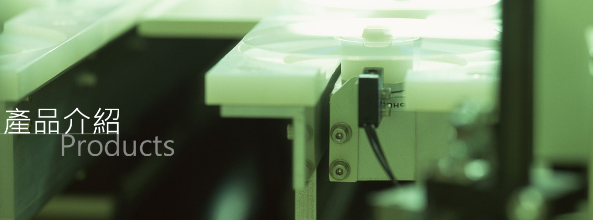

客製化設計服務成績
展開科技致力為客戶提供解決方案，發揮極致的設計能力，完整呈現客戶所託，使命必達.......
快速跳頻模組
採用AD9914、HMC832可支持30MHz~3GHz的快速跳頻，方便客戶開發跳頻通信機時的設計考量時，可以採用此外部跳頻板或是由系統的內部來支持快速跳頻。另可將FPGA由外部跳頻板移除來減化外部跳頻板的設計。
射頻功放模組
射頻功率放大模組是無線通訊基站和直放站等功率放大設備核心部件。我司開發了一系列高線性、高效率、高穩定性的射頻功放模組，廣泛應用在各種運營商無線通訊基站、直放站、無線網路優化設備，以及MESH、電力、安全等行業無線發射機設備中 。同時，我司也承接功放模組的定制業務。
低紋波電源
AC/DC開關電源以及DC/DC電源中的交流成份(Ripple)會對一般系統造成危害，例如:
1. 在系統上會產生諧波
2. 會導入噪音(Noise)，有可能使得設備無法正常運作
3. 會干擾數位電路的邏輯運算
4. 會產生浪湧電壓或是電流的產生，嚴重會燒毀系統，降低電源的效率 本公司研發之”極低紋波電源”，
將能有效解決目前電源紋波所造成的問題。

相位同步平台
AD9361相位同步射頻採集平臺是一款基於4片AD9361，可實現8通道射頻信號採集的SDR平臺，板上自帶相位校準網路，可選的外部本振源，非常適合矩陣式收系統的應用。 板上的4片AD9361負責射頻信號的採集，FPGA負責AD9361的控制和採集資料交互，FLASH用於板載資訊存儲，DDR3用於採樣資料存儲，千兆網介面用於採樣資料的高速傳輸。
ADRV9009開發平台
ADRV9009是一款高集成度射頻(RF)捷變收發器，能支援全部蜂窩標準的RF收發器，提供雙通道發射器和接收器、集成式頻率合成器以及數位信號處理功能。 該款收發器提供兩倍於前代器件的頻寬(200 MHz)，可取代多達20個器件，功耗降低一半，封裝尺寸減小60%。憑藉行業領先的性能以及更小的尺寸、重量與功耗，ADRV9009收發器能夠滿足新興5G無線基礎設施設備以及航空航太系統嚴苛的天線密度和擴展網路容量要求。
ADRV9026開發平台
ADRV9026-SDR基于ADI 28nm新一代RF收发ADRV9026，支持4个收发通道，提供0.5倍于前代器件(ADRV9009)的通道功耗，可支持FDD和TDD标准，帮助简化3G/4G/5G应用的设计，同时降低系统功率、大小、重量和成本。 採用基于XILINX 16nm新一代ARM+FPGA处理器XCZU11EG，相比Zynq 7000系列每瓦性能提升5倍，使得整个平台获得了更加强大的数据处理能力。用户可以通过 QSFP28+和USB3.0传输高速数据。多块板卡可以快速组合搭建5G大规模MIMO系统，极大的方便用户评估。本開發板使用一颗ADRV9026芯片，搭载一颗XCZU11EG。
GPS Repeater
因應5G O-RAN信號的覆蓋需求，公司提供GPS信號覆蓋產品讓5G O-RAN設備能夠進行準確地同步。
客製化設計
公司承接通信相關產品的客製化設計，歷來已經提供多種客製化設計產品給客戶，例如: 影像處理、信號處理、同步真測等。
特殊元件
因應特別的應用，公司提供特殊元件的開發設計。
下載：ZKT1810 Pushbutton OnOff Controller.pdf 檔案